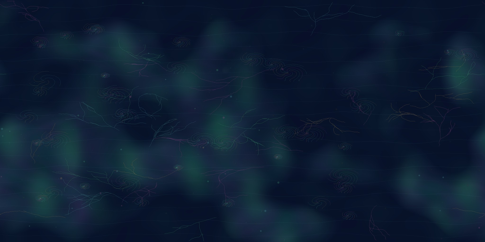
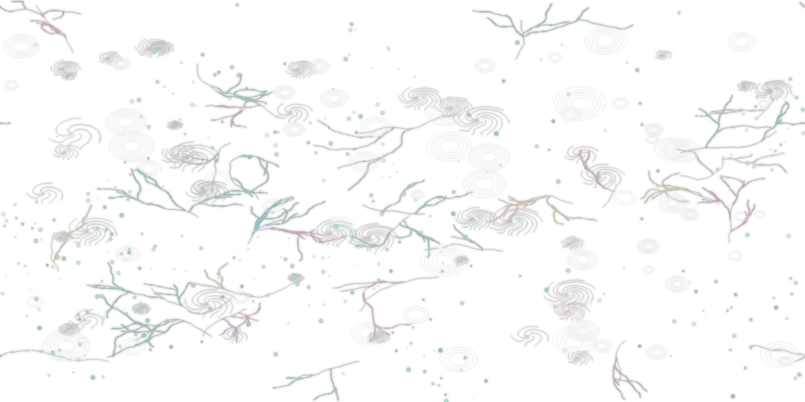
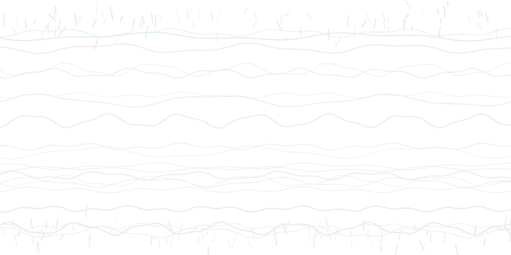

Organic fractal edition: smoother technorganic flow, Mandelbulb-like bloom clusters, recursive tendrils, spiral basins, and fewer straight "chopstick" plate-lines.
Desktop: WASD move, mouse drag look. Quest: Enter VR, controller/cursor select hotspots.
Click/tap a hotspot to inspect one region of the organic-fractal world.


